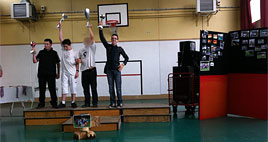
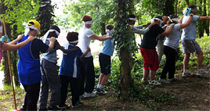
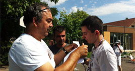

|
Mercredi, 11 Juillet 2012 00:00 |

|
La fête du sport a eu lieu cette année du
jeudi 28 juin au jeudi 5 juillet
Elle a été merveilleusement organisée par l’équipe EPS :
Elodie, Stéphanie et Jean-Christophe.
|
|
Beaucoup de disciplines ont été pratiquées :
Foot (88 participants), base-ball (78 participants) au gymnase des tourelles, natation (30 participants) à la piscine de Claye-Souilly, hockey (40 jeunes) mais également un parcours moteur géant, des animations sportives dans le parc, tir à l’arc (14 enfant et 8 adultes) , basket (80 participants),hockey (40 jeunes), pour se terminer avec la pétanque (100 personnes) au boulodrome.
|
 |

|
La fête s’est terminée avec la remise des récompenses |

|
|
Mais cette année une nouvelle épreuve a été organisée : Koh-lanta avec un parcours composé de différentes épreuves alliant le physique et la logique dans différents lieux de l’établissement.
Au total, ce sont en moyenne 100 participants selon les disciplines, qui ont concouru (jeunes et adultes) à l’édition 2012. Mais l’IMED, maintenant EPMS, officiellement depuis le 23 juin, n’était pas seul participant. Se sont joints à nous : l’IME de Rebais, l’EMP de Livry-Gargan, l’IME de la Gabrielle de Claye-Souilly et l’IME d’Aulnay s/s bois.
Merci à tous de votre participation, éducateurs, enseignants, personnel administratif et technique.
La fête s’est terminée avec la remise des récompenses : cartes cadeau, médailles, diplômes et coupes pour récompenser les vainqueurs. Et c’est à l’issue de cette magnifique semaine que chacun s’est dit au revoir, quelques larmes de joie mais aussi beaucoup d’émotion pour certains.
Bonnes vacances à tous.
|
|
|
|
Mise à jour le Jeudi, 22 Octobre 2015 18:49 |